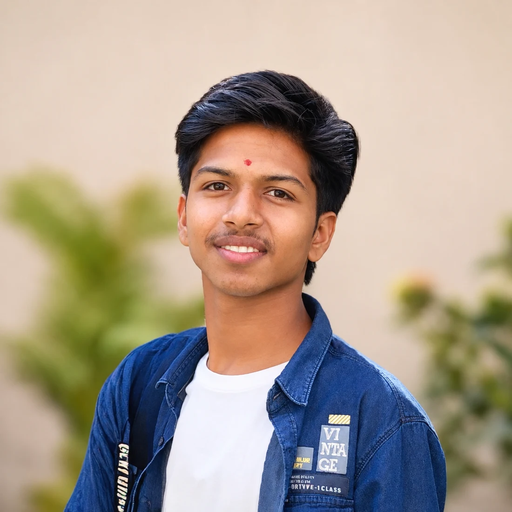

Bachelor of Computer Applications
Currently studying · Pune, India
Web development & digital experiences
I’m Anmol, a BCA student in Pune. I build web applications, bring businesses online, and help brands reach people.
Explore my worldBased in Pune, India.
Learning by making.

01 / The work
A few ideas, brought to life
Applications, live business websites,
and the work that keeps them growing.
These interactive studies demonstrate this portfolio’s design. Personal projects will appear here as they’re added.
02 / The person
A face, a perspective, a story.
I believe the most interesting things begin with a question. This is my little space to explore, make, and share what comes next.
There’s more to a person than a list of skills. Here, you’ll find a bit of my perspective, one idea at a time.
03 / Always learning
Classroom curiosity. Practical experience.Currently studying · Pune, India
Formal qualification certificate
Active college club member
04 / What’s next
Good things start with hello.A new idea, an opportunity, or just a conversation.
I’d love to hear from you.
Contact details are being added.